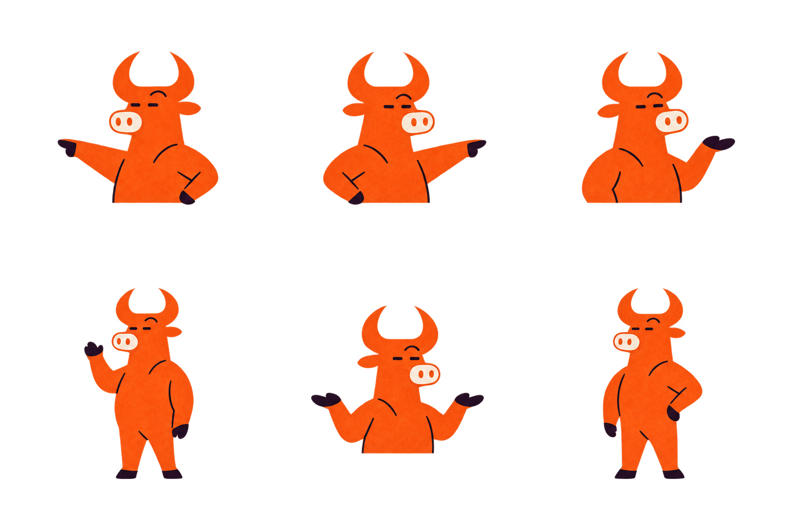
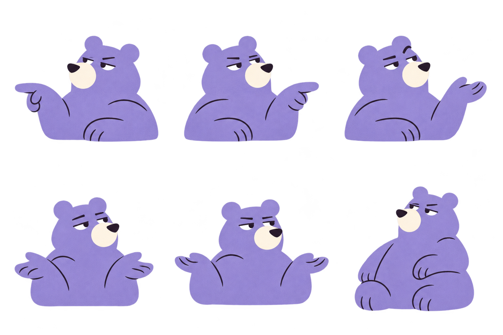
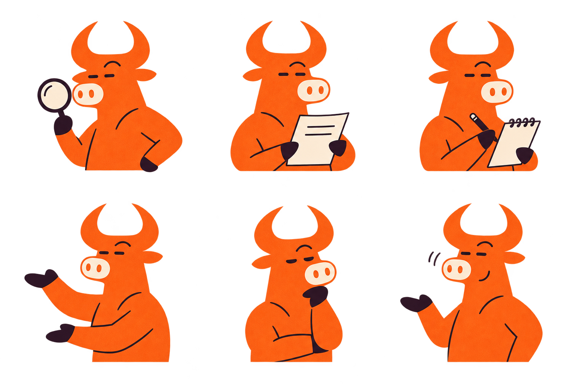
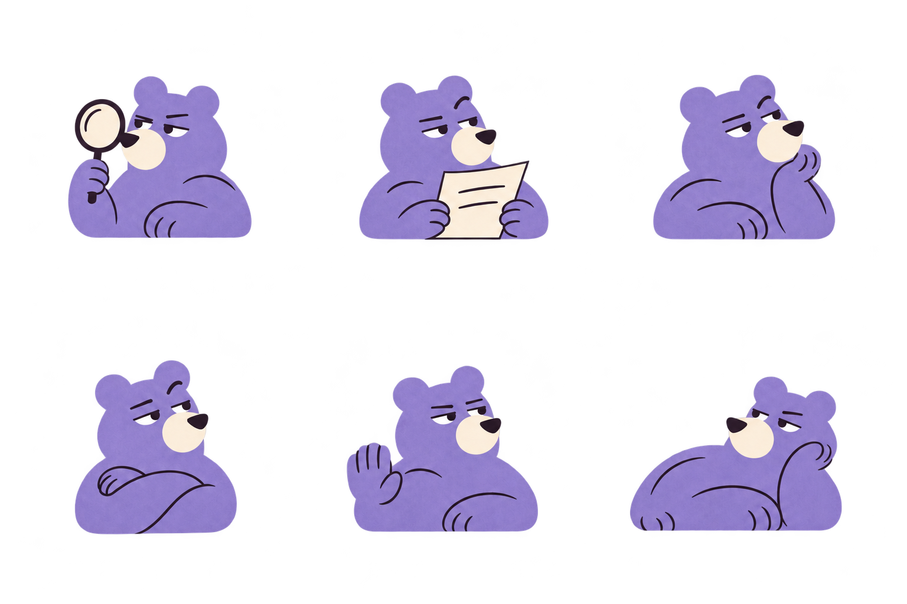

<!doctype html><html lang="en"><meta charset="utf-8"><meta name="viewport" content="width=device-width,initial-scale=1"><title>+EV — 24 mascot poses</title><style>*{box-sizing:border-box}body{margin:0;background:#faf7f0;color:#241626;font-family:Arial,sans-serif;padding:20px 30px}header{display:flex;align-items:baseline;justify-content:space-between}h1{font-size:30px;letter-spacing:-1.5px;margin:0}h1 span{color:#ff681b}header p{font-size:14px;margin:0;color:#695c6a}main{display:grid;grid-template-columns:1fr 1fr;gap:10px 30px;margin-top:16px}figure{margin:0;border-top:1px solid #ddd1db}figcaption{font-size:14px;padding-top:10px;font-weight:600}img{display:block;width:100%;height:calc((100vh - 140px)/2);object-fit:contain}@media(max-width:650px){body{padding:16px}header{display:block}header p{margin-top:10px}main{gap:12px}img{height:auto}}</style><header><h1><span>+</span>EV</h1><p>24 research poses · orange bull + lavender bear</p></header><main><figure><figcaption>The bull · explain</figcaption></figure><figure><figcaption>The bear · explain</figcaption></figure><figure><figcaption>The bull · investigate</figcaption></figure><figure><figcaption>The bear · investigate</figcaption></figure></main></html>
